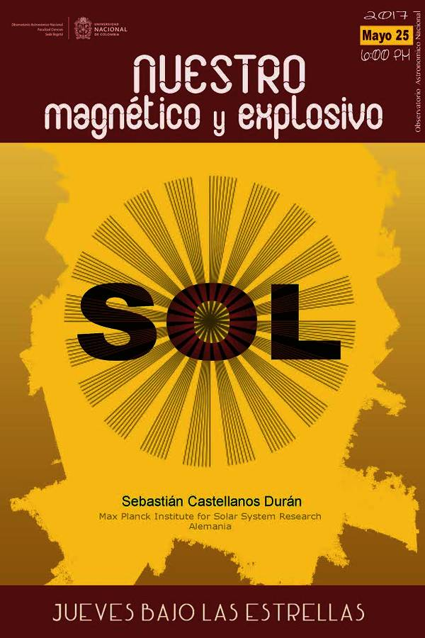

Outreach
Last update: April 2020
| 3/2019 | EST outreach article: How dynamic is our Sun? | Link |
| 5/2017 | Outreach talk during "Jueves bajos las Estrellas" at Observatorio Astronómico Nacional  |
Bogotá, Colombia |
| 2/2017 | Night of science - Max Planck Institute for Solar System Research | Göttingen, Germany |
| 9/2015 | Naturama day of science - FHNW | Aarau, Switzerland |
| 2011-2016 | Weekly Astronomy observations at OAN | Bogotá, Colombia |
| 5/2015 | Spacio review talk about solar magnetic fields at District Planetarium | Bogotá, Colombia |
| 2013-2014 | Book editor's assistant: "Astronomía para todos. Retos modernos de una ciencia milenaria". ISBN 978-958-761-656-9. | Colombia |
| 2012-2014 | One of three people allowed to give tours on the historic part of OAN. It is the oldest observatory in Latin America | Bogotá, Colombia |
| 10/2014 | Spacio review talk about Integrated field spectroscopy with CALIFA and PINGS surveys: emission line detection methods and integrated galaxy properties at District Planetarium | Bogotá, Colombia |
| 4/2014 | Spacio review talk about the Sun and White-light flares at District Planetarium | Bogotá, Colombia |
| 6/2012 | Co-responsible for Venus transit streaming, watched by 80.000 people at Unimedios - UNAL. | Bogotá, Colombia |